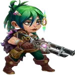
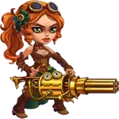

Guia do Guus – Curandeiro do Caminho da Honra em Hero Wars Alliance
- Por: Alexandre Domingos. .
GUUS é um novo Herói do Caminho da Honra com foco em manter os aliados vivos. Este senhor e seu ganso dourado aumentam o poder dos acertos crÃticos e protegem toda a equipe contra dano explosivo e dano ao longo do tempo. Cuidado, seu ganso provavelmente pode dar uma boa mordida!
Quem é Guus
- CLASSE: Curandeiro
- FACÇÃO: Caminho da Honra
- POSIÇÃO: Linha do Meio
- ATRIBUTO PRINCIPAL: Força
- SINERGIAS: Heróis do Caminho da Honra, especialmente Qing Mao, Ishmael, Artemis, Tristan, Galahad
Prioridade de Aprimoramento das Habilidades de Guus - Hero Wars Alliance
Entenda quais habilidades do Guus evoluir primeiro para manter sua equipe viva por mais tempo e aumentar seu poder crÃtico com penas douradas!

Sob as Asas
Essa é a principal habilidade de cura do Guus. Ela restaura instantaneamente a Vida de todos os aliados e concede a cada um uma Pena Dourada. A pena aumenta a chance de Acerto CrÃtico por 8 segundos, e cada vez que Guus a aplica novamente, o efeito é estendido. Funciona constantemente na batalha, ajudando todos os aliados a causarem mais dano crÃtico e sobreviverem por mais tempo.
Prioridade de Evolução: Alta – Esta é a habilidade central do Guus. Melhora tanto a cura quanto o dano por meio da chance crÃtica. Quanto mais você aprimorar, mais toda a equipe se beneficia, especialmente em lutas longas.

Esquadrão da Pena
Essa habilidade dá uma Pena Dourada a todos os aliados posicionados à frente de Guus. Sempre que eles recebem dano, se curam um pouco. É especialmente útil para proteger tanques e causadores de dano na linha de frente.
Prioridade de Evolução: Média – Boa habilidade de suporte para cura, mas só ajuda aliados à frente de Guus. Você deve evoluÃ-la após a habilidade principal para aumentar a sobrevivência em batalhas difÃceis.

Bicada Certeira
Essa habilidade passiva ativa quando um aliado com uma Pena Dourada está prestes a cair abaixo de 25% de Vida. Ele é curado instantaneamente, e a quantidade depende do tempo restante da pena. Em seguida, a pena desaparece. É uma rede de segurança para situações crÃticas.
Prioridade de Evolução: Média – Muito útil para salvar aliados, mas só é ativada em emergências. Aprimore-a depois das habilidades principais de cura para torná-la mais forte em momentos-chave da batalha.

Honkageddon
Em vez de causar dano extra, os acertos crÃticos de Guus curam aliados próximos e aplicam Penas Douradas neles. Aliados com penas causam mais dano crÃtico, e heróis do Caminho da Honra causam dano extra baseado em sua Vida atual.
Prioridade de Evolução: Baixa – Essa habilidade é poderosa em teoria, mas depende bastante da composição da equipe e do tempo certo. Evolua por último, depois de garantir que suas habilidades de cura e fortalecimento com penas estejam fortes.
Prioridade de Evolução dos Artefatos do Guus – Hero Wars Alliance
Descubra quais artefatos priorizar para o Guus a fim de aumentar a cura, a sobrevivência e a sinergia crÃtica em toda a equipe na Hero Wars Alliance!

1º - Arma: Ganso Dourado
Este artefato aumenta a Resistência, que reduz todos os tipos de dano que Guus recebe quando sua vida está baixa. Isso é essencial porque Guus é um curandeiro da linha do meio que precisa permanecer vivo para fornecer cura constante e aplicar Penas Douradas aos aliados.
Prioridade de Evolução: Alta – Manter Guus vivo por mais tempo significa mais cura e mais reforços crÃticos para sua equipe. Isso torna a arma a prioridade máxima para sobrevivência e suporte ao time.

2º - Livro: Código do Guerreiro
Este artefato concede Chance de Acerto CrÃtico e Ataque FÃsico. Esses atributos melhoram diretamente a habilidade "Honkageddon" de Guus, permitindo que seus acertos crÃticos curem aliados

3º - Anel: Anel da Força
Este artefato aumenta a Força, o que eleva a vida e o ataque fÃsico de Guus. Embora ambos sejam úteis, esse artefato tem menos impacto imediato em suas habilidades de cura em comparação com os outros.
Prioridade de Evolução: Baixa – Apesar de melhorar a sobrevivência e os atributos básicos, não aprimora diretamente as mecânicas de cura ou utilidade crÃtica do Guus. Evolua este por último, após garantir um impacto mais efetivo para toda a equipe com os outros artefatos.
Guus SINERGIAS - Hero Wars Alliance
SINERGIAS: Caminho da Honra
Artemis

Com sua recente reformulação, Artemis causa ainda mais dano crÃtico. Guus potencializa seu desempenho, e quanto maior a vida dos aliados, mais dano ela causa.
Galahad

Galahad se beneficia do vampirismo e, com a chance de acerto crÃtico fornecida por seu Talismã, consegue ativar os efeitos de sinergia de Guus com mais eficácia.
Ishmael

Um guerreiro com alto dano crÃtico e vampirismo. Guus melhora ainda mais a sobrevivência e a eficácia dos acertos crÃticos de Ishmael.
Qing Mao

Precisa equipar o Talismã da Perda para ganhar chance de acerto crÃtico, permitindo ativar a sinergia com Guus e causar dano mais confiável.
Tristan

Embora Tristan não possua atributos de acerto crÃtico, ele fornece forte penetração de armadura e apoia outros heróis do Caminho da Honra amplificados por Guus.
Outras Sinergias com Outras Facções
Astrid
Sinergia: Possui um talismã que concede chance de acerto crÃtico quando usado em batalha.
Jet

Sinergia: Concede chance de acerto crÃtico para todos os aliados.
Sebastian

Sinergia: Aumenta o dano de acerto crÃtico dos aliados.
Kayla

Sinergia: Pode usar um talismã de chance de acerto crÃtico para ativar sinergia com Guus.
Lara Croft

Sinergia: Causa uma grande quantidade de dano crÃtico.
Jhu

Sinergia: Possui naturalmente alto dano de acerto crÃtico.
Oya

Sinergia: Cura os aliados quando eles causam dano crÃtico.
Yasmine

Sinergia: Uma das maiores causadoras de dano crÃtico do jogo.
Ginger
Sinergia: Possui um talismã que concede chance de acerto crÃtico ao ser usado em batalha.
Julius

Sinergia: Fornece escudos, cura e, ao ativar seu artefato, concede chance de acerto crÃtico aos aliados.
Conclusão do Guia do Guus
Guus não é apenas um curandeiro ele é um facilitador de sinergia crÃtica que apoia sua equipe aumentando a sobrevivência e potencializando o dano causado. Priorizar a arma Ganso Dourado garante que Guus possa permanecer vivo por mais tempo durante batalhas intensas, maximizando o tempo de atividade de sua cura e dos efeitos da Pena Dourada. Como suas habilidades dependem fortemente de sua presença ativa no campo de batalha, o aumento de resistência proporcionado por esse artefato é indispensável.
Depois de garantir a sobrevivência do Guus, aprimorar o livro Código do Guerreiro concede chances de acerto crÃtico e ataque fÃsico, aumentando a eficácia da habilidade "Honkageddon" e reforçando sua utilidade em composições de equipe focadas em crÃticos. Embora o Anel da Força seja útil para melhorar seus atributos base, ele não impacta diretamente suas habilidades, tornando-o o menos urgente para evoluir. Ao seguir essa ordem de evolução dos artefatos, os jogadores podem desbloquear todo o potencial de suporte do Guus e manter suas equipes da facção Honra fortes em cada batalha.
Você pode ter interesse:
 Fafnir
Fafnir Luther
Luther Tristan
TristanDeixe Sua Opinião!
Você gostou do nosso Guia do Guus para Hero Wars Mobile? Há algo que não entendeu ou gostaria de sugerir mudanças? Convidamos você a se juntar à nossa sessão de comentários na página do Alexandre Games Blog. Não hesite em expressar sua opinião, clarificar suas dúvidas e compartilhar sua sugestões.
Clique no botão abaixo para começar: